Today in Paradise
Two thieves. Same cross. Two answers.

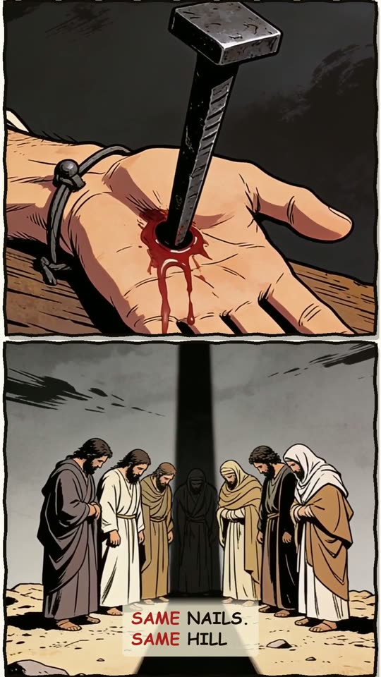
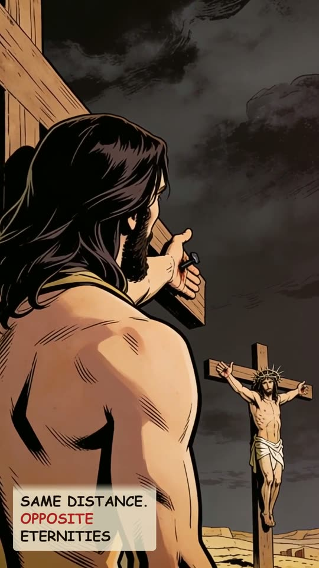
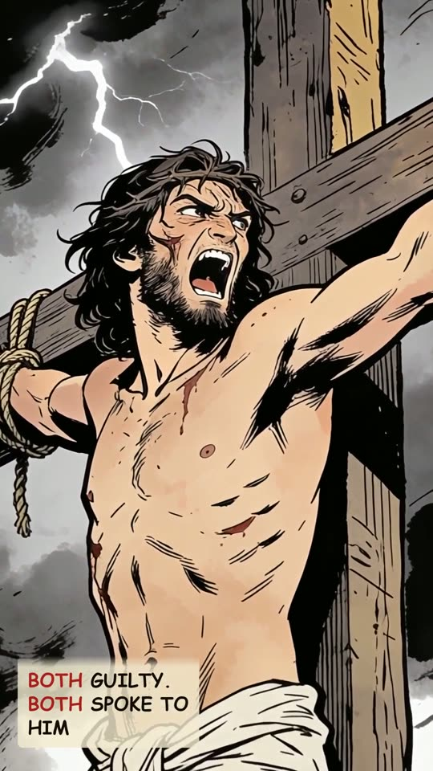
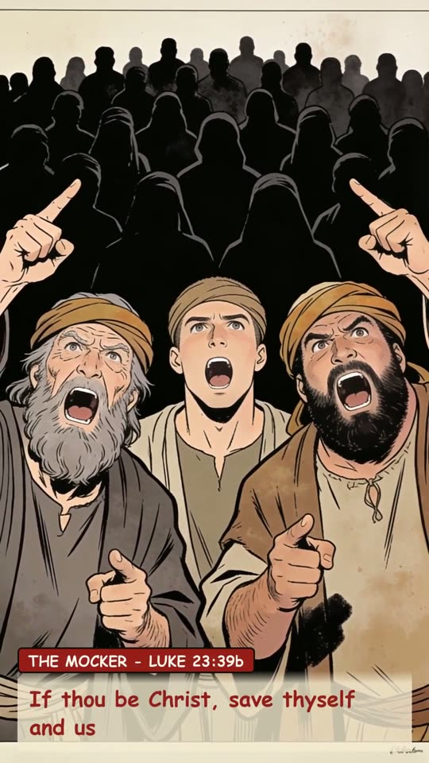
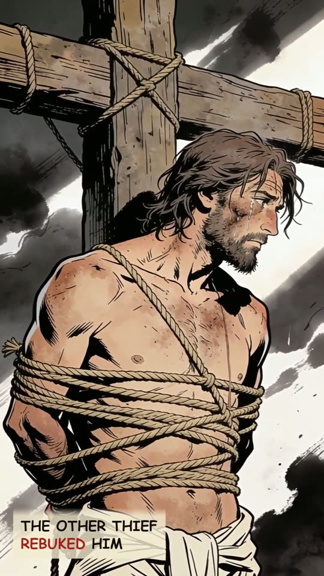
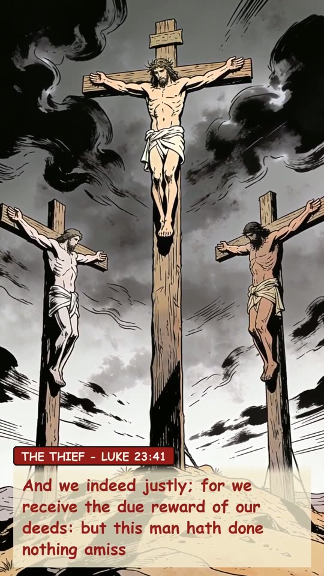
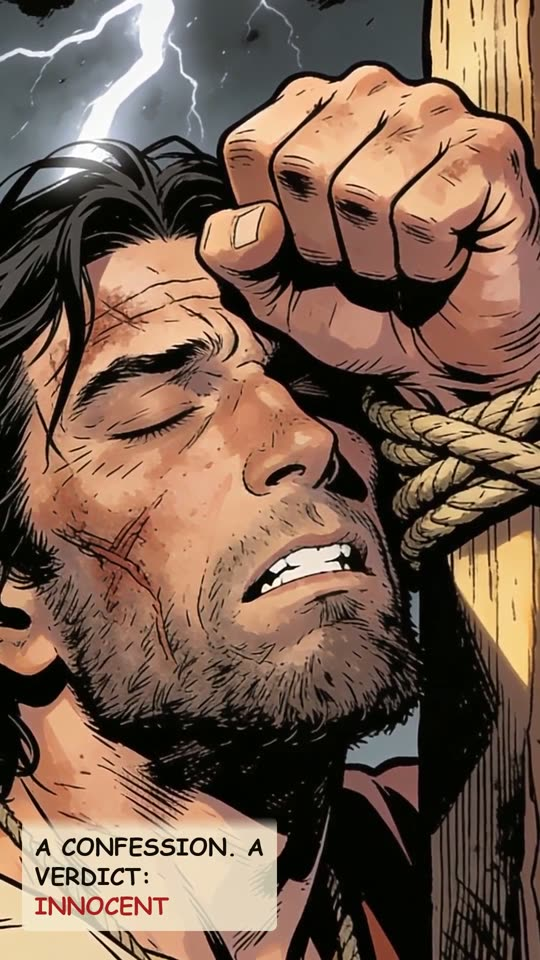
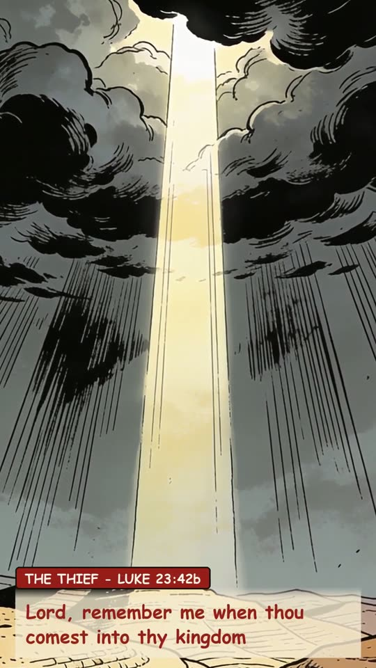
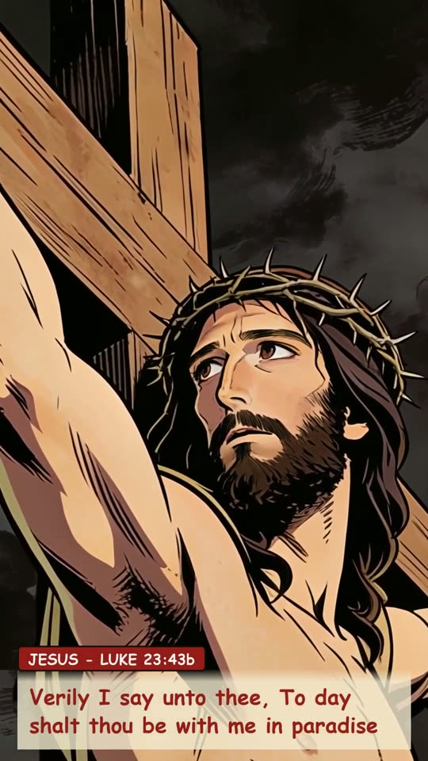
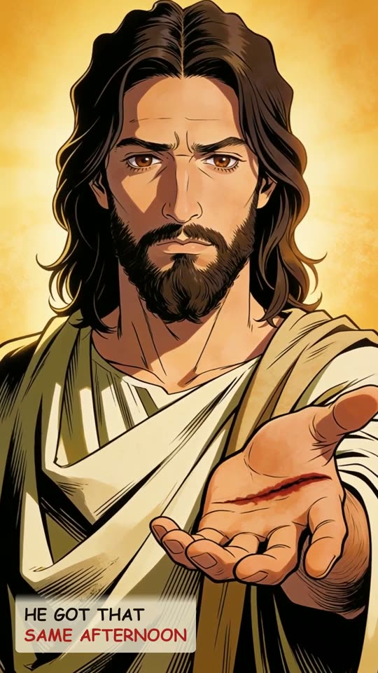
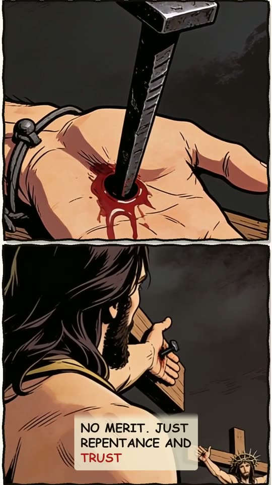
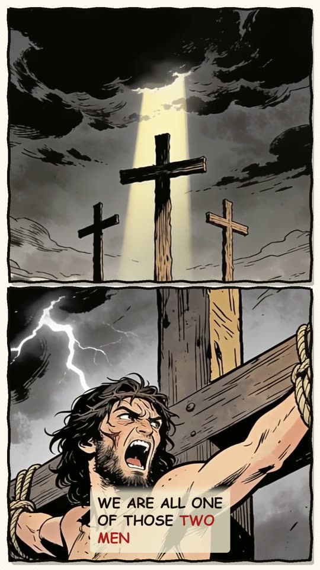
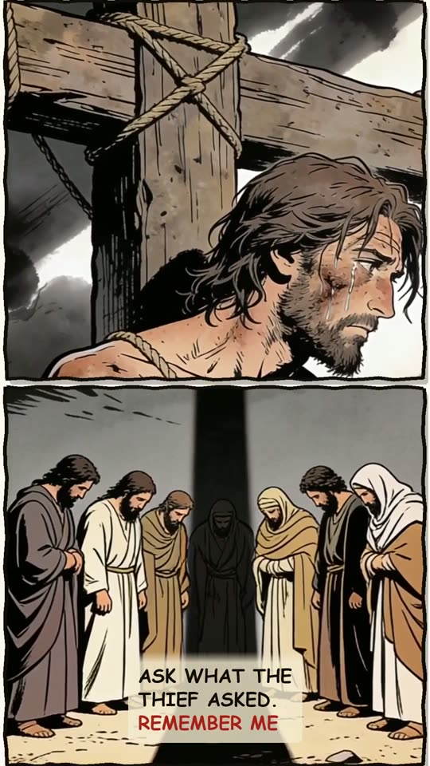
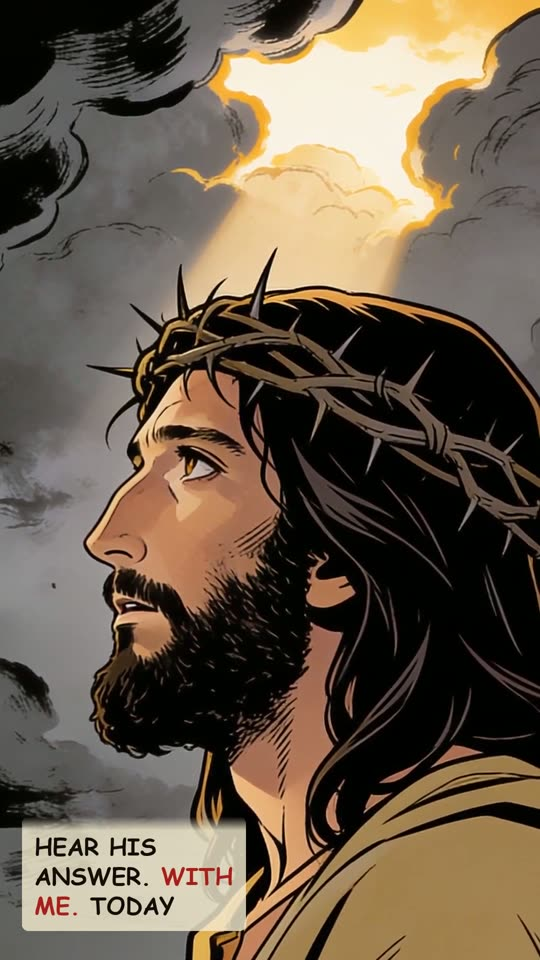
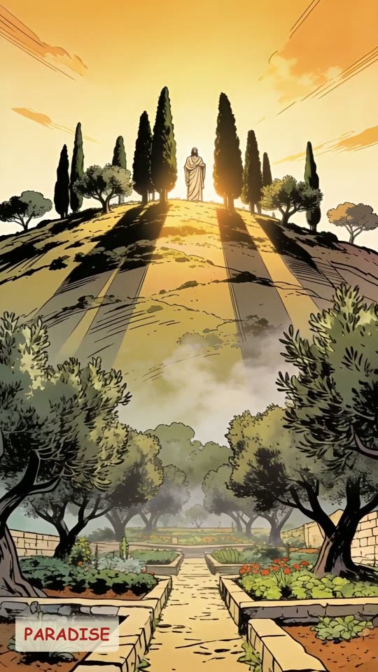
The narration
Two criminals died beside Jesus that afternoon. Same nails. Same hill. Same distance. Opposite eternities. Both guilty. Both just as close. Both spoke. If thou be Christ, save thyself and us. A taunt, not a prayer. The other thief rebuked him. And we indeed justly; for we receive the due reward of our deeds: but this man hath done nothing amiss. A confession. A verdict: innocent. Then one request. Lord, remember me when thou comest into thy kingdom. Verily I say unto thee, To day shalt thou be with me in paradise. He asked for someday. Jesus gave him that same afternoon. No merit. Just repentance and trust. We are all one of those two men. Ask what the thief asked. Remember me. Then hear his answer. With me. Today. Paradise.